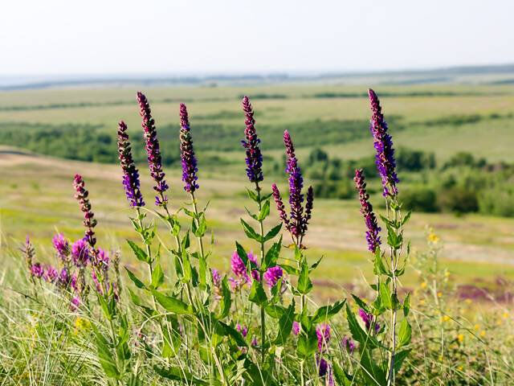

Мятлик луговой (poa pratensis) является травяным растением, предназначенным для выращивания газонов. Его используют в ландшафтном дизайне как одну из самых удобных и неприхотливых трав. Мятликовая лужайка преображает участок с любыми особенностями. Полное формирование травостоя происходит через четыре года после посева семян. В первый год побеги, как правило, еще слабые и тонкие. Постепенно они ветвятся, а многочисленные побеги покрывают земельный участок плотным зеленым «одеялом».
Растение входит в группу многолетних озимых злаков. Ранней весной начинается фаза активного роста луговой травы. А в конце весны (либо в начале лета) начинается период цветения. Размножение газонной травы происходит вегетативным путем – корнями и семенами.
Внешний вид мятлика лугового характеризуется следующими особенностями:
Мятлик луговой:
| Столбец 1 | Столбец 2 | Столбец 3,4 | |
|---|---|---|---|
| Ячейка 1,5,9 | Ячейка 2 | Ячейка 3 | Ячейка 4 |
| Ячейка 6 | Ячейка 7 | Ячейка 8,12 | |
| Ячейка 10 | Ячейка 11 | ||